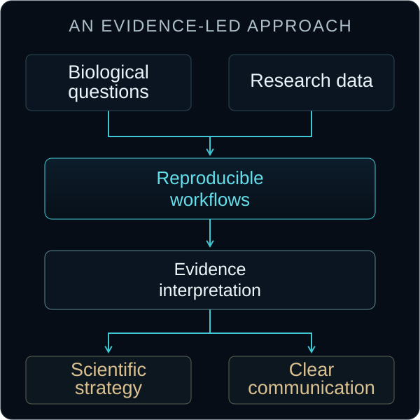

Translational AI
& scientific strategy
Scientific direction for AI, multi-omics and precision medicine initiatives, with careful attention to what the evidence can support.
Strategy · Evidence interpretation · PartnershipsVirologist · Founder · Science communicator
I connect research, evidence and education to advance biomedical innovation. KU Leuven-trained virologist. Founder & Executive Lead of STaiMIC.
Based in Italy / Working across Europe & MENA

01 / Expertise
Two decades across antiviral research, biomedical education and translational innovation shape how I approach each new challenge.
Scientific direction for AI, multi-omics and precision medicine initiatives, with careful attention to what the evidence can support.
Strategy · Evidence interpretation · PartnershipsConnecting data provenance, study-design limitations and transparent computational practice to more defensible biomedical decisions.
Nextflow · Reproducibility · GovernanceMaking complex science accessible through training, illustration and narrative, in Arabic, English and Italian.
Healthcare education · Visual storytelling02 / Selected work
STaiMICStrategic Translational AI &
Multi-Omics Innovation Center
I lead a pre-seed venture developing non-diagnostic decision-support approaches for AI, multi-omics and precision medicine.
Our work on STaiMIC Evidence Gate connects reproducible workflows with provenance, study-design limits and evidence interpretation. I lead scientific strategy, operating priorities and partnerships across clinical, academic and industry teams.
Explore our work, support its development, collaborate with us or contribute your scientific expertise.
Visit STaiMICPublic-facing science
Directed a three-volume digital and print miniseries to strengthen vaccine awareness among young European audiences. Published through the European Commission Learning Corner, with scientific input from ECDC and EMA.
Professional education
Designed and delivered education in AI and machine learning, helping healthcare professionals interpret the technology and approach its adoption responsibly.
Inclusive health education
Interactive Long COVID education for children and families at Gemelli in 2022. Storyline and animation development for Roma and Sinti health awareness programmes at Università Cattolica in 2023, delivered with the Center for Global Health and Croce Rossa Italiana.
03 / Background
My career began with viruses and antiviral strategies. It grew into a wider question: how do we make scientific evidence understandable, useful and worthy of trust?
From the laboratory to science communication and now translational AI, that question continues to guide my work.
Pre-doctoral training at KU Leuven and INSERM; doctoral research at the Rega Institute spanning hepatitis C and dengue antiviral strategies. PhD awarded in 2014.
Founded Cimaza, translating medical evidence into illustration, animation and education for medical institutions, pharmaceutical companies and public audiences.
Independent biomedical education and communication, expanding into AI in medicine from 2024. Invited virology teaching at UCLA Extension in spring 2021.
Founded STaiMIC to connect scientific strategy, reproducible computation and evidence governance across Europe and the MENA region.
04 / Publications & service
From peer-reviewed research to public education and responsible AI governance.
Six virology research articles and a clinical review published in EFORT Open Reviews in 2025.
Research record on ORCIDThree European Commission volumes and one book for the Kuwait Foundation for the Advancement of Sciences. Two further articles published in Frontiers for Young Minds.
Professional contribution
Further reading
For publication details and further reading, explore my research record on ORCID.
05 / Speaking & recognition
Two oral presentations accepted for the 2026 summit.
Accepted presentationsChairperson · National conference, Oman.
Guest speaker · European Commission vaccination webinar.
06 / Contact
For scientific advice, translational partnerships, speaking engagements and biomedical education, contact me on LinkedIn or X.